Alana D'Avila
Cirurgia PlásticaVideomaker e fotógrafa profissional do cliente da agência ACEV para captações de cirurgias e conteúdos do Instagram da Dra. Alana e toda sua demanda audiovisual solicitada.
7 vídeos · arraste para o lado →
Portfólio · Qetlei Jennifer
Contando histórias que conectam, com um celular na mão ou uma câmera no ombro.
Sobre
Oi! Sou apaixonada por contar histórias e tenho um amor profundo pela arte em suas diversas formas.
Com 4 anos de experiência no mercado, tive a oportunidade de explorar e trabalhar em várias áreas criativas, como fotografia, edição e produção de vídeos para plataformas como YouTube, Instagram e TikTok.
Acredito que cada aprendizado ao longo dessa jornada é valioso e, por isso, decidi reunir o melhor de todas essas experiências para dar vida à Qriativa!
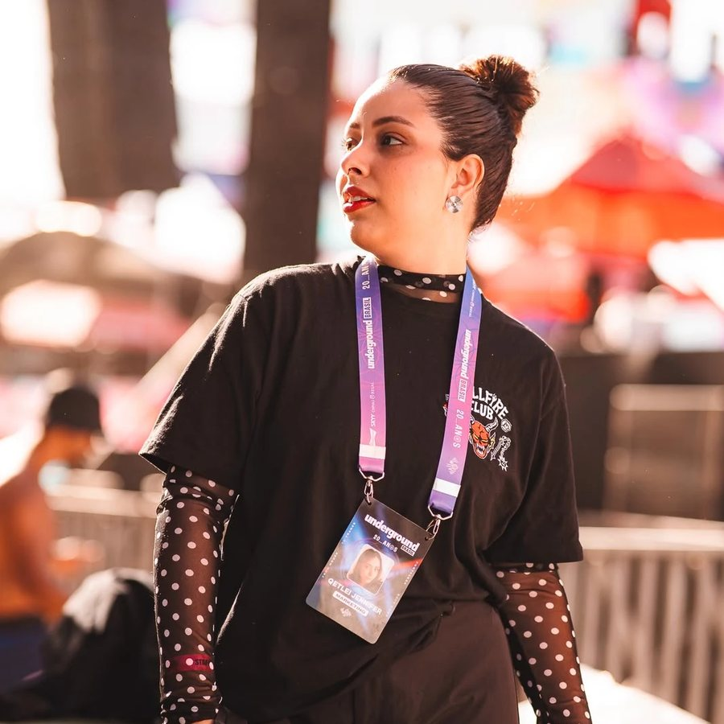
Valorizamos a inovação e a originalidade em todas as nossas soluções, buscando sempre ideias que desafiem o comum.
Acreditamos que o trabalho em equipe é fundamental. Nossas melhores ideias surgem quando unimos talentos e perspectivas diferentes.
Promovemos uma comunicação honesta e transparente, tanto internamente quanto com nossos clientes, valorizando a singularidade de cada marca.
Estamos sempre nos atualizando com as últimas tendências e tecnologias, buscando constantemente novas formas de impactar positivamente.
O que eu faço
Do roteiro à entrega: cada formato pensado para a sua marca aparecer do jeito certo, na plataforma certa.
Captação com câmera profissional, direção e edição para clínicas, marcas e agências.
Retratos, bastidores e registro de procedimentos com estética editorial.
Planejamento, roteiro, captação e edição de Reels e TikToks feitos no celular.
Cobertura ao vivo com conteúdo publicado durante o próprio evento.
Pré-wedding, casamento, aniversário e eventos. Histórias de amor contadas com um celular.
Videomaker e fotógrafa profissional do cliente da agência ACEV para captações de cirurgias e conteúdos do Instagram da Dra. Alana e toda sua demanda audiovisual solicitada.
7 vídeos · arraste para o lado →
Videomaker e fotógrafa profissional do cliente da agência ACEV para captações e conteúdos do Instagram da Dra. Fabiana Lustosa e toda sua demanda audiovisual solicitada.
6 vídeos · arraste para o lado →
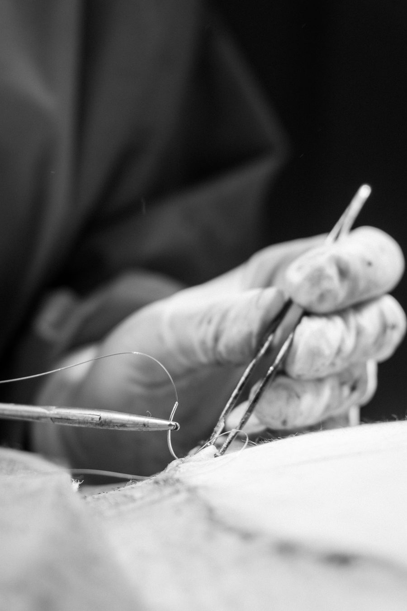
Centro cirúrgico · registro de procedimentos
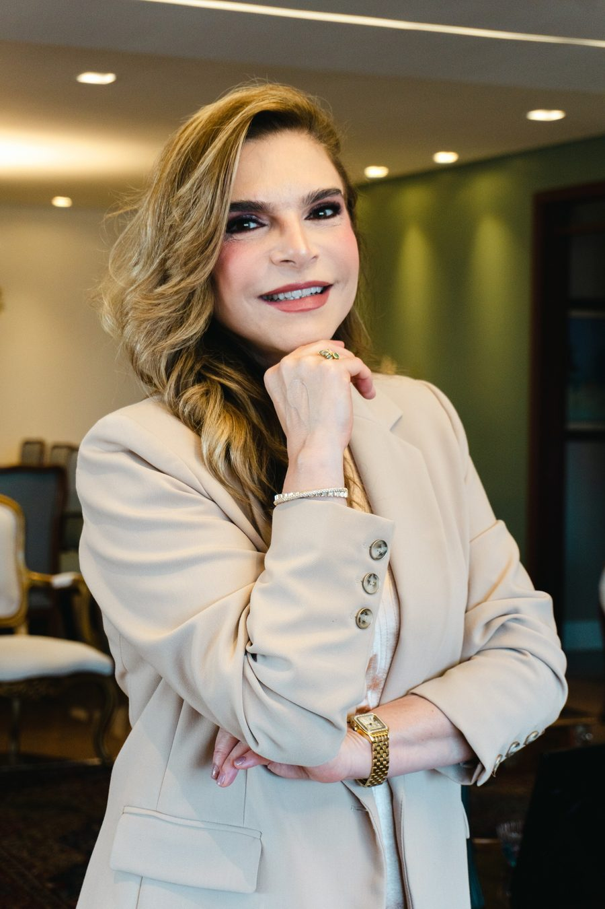
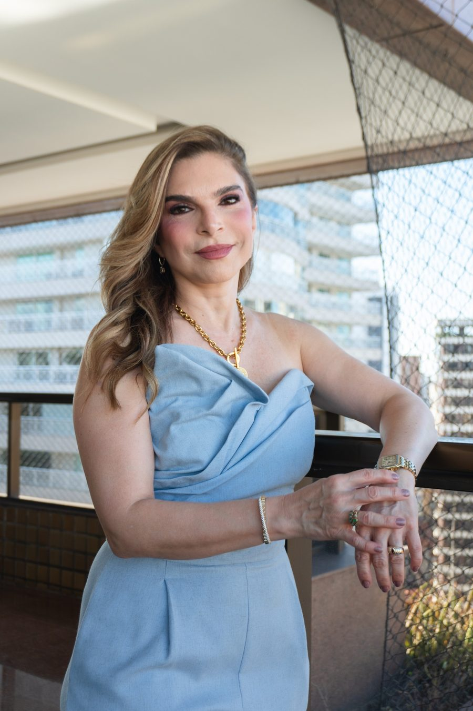
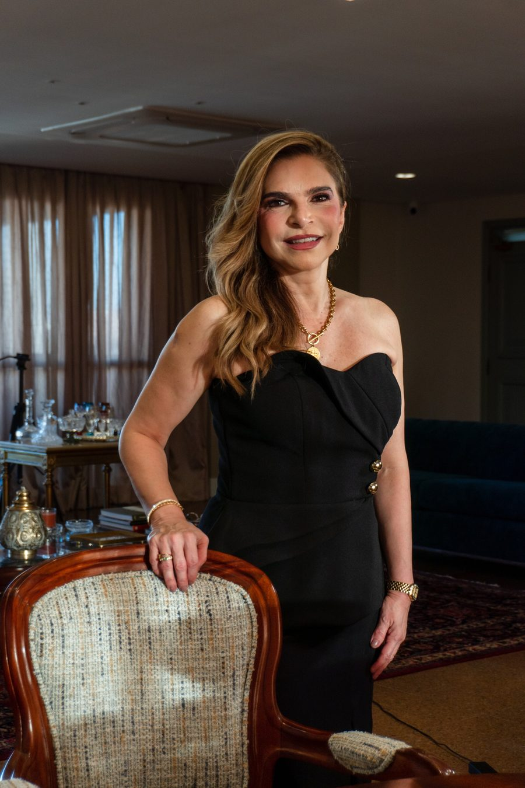
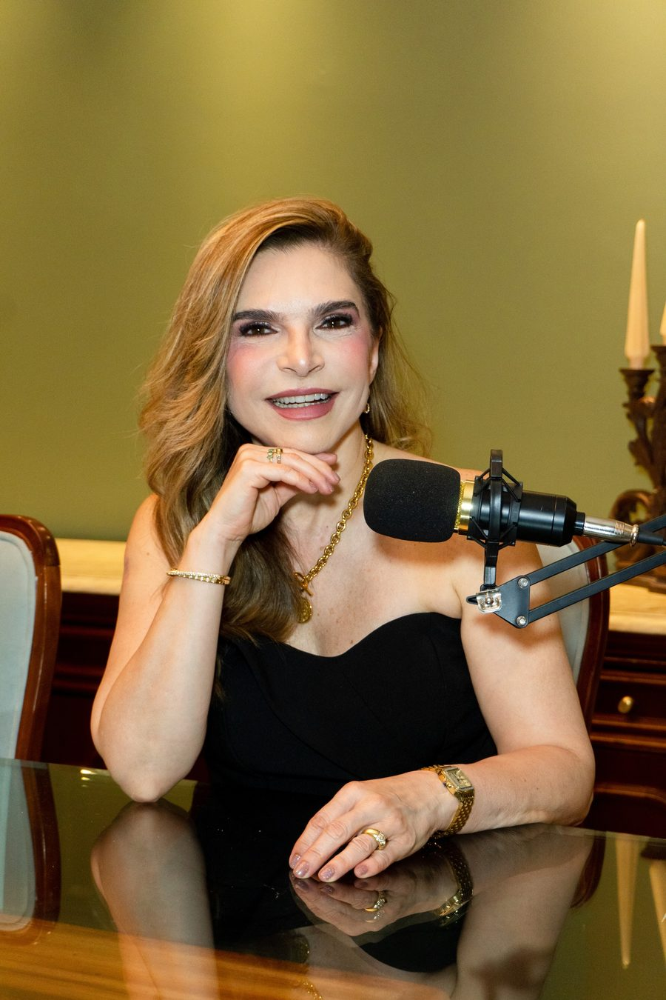
Retratos corporativos · Dra. Fabiana Lustosa
Social Media do primeiro ano de marca, fui a profissional responsável por planejamento, estratégia, captação, roteirização e edição dos conteúdos da Trent Fit, na Agência TANQ Comunicação.
A marca logo ganhou o carisma do público e uma retenção orgânica única.
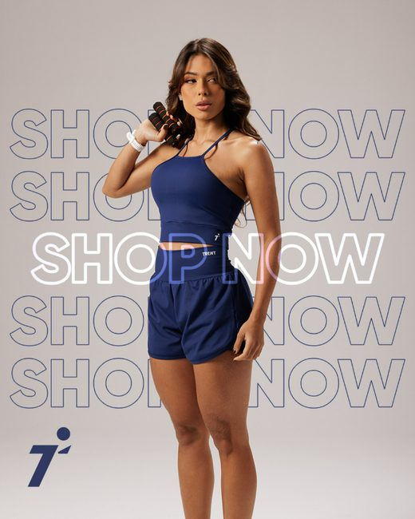
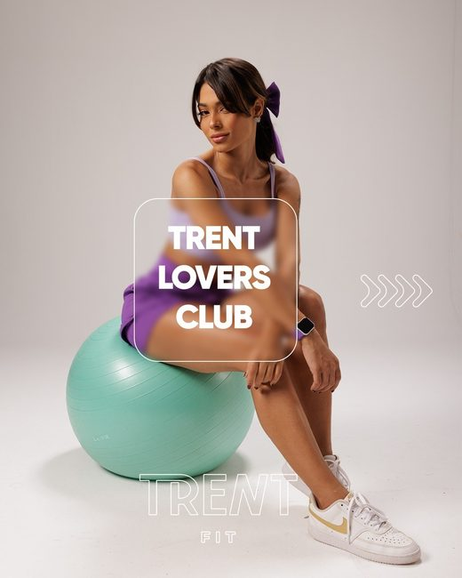
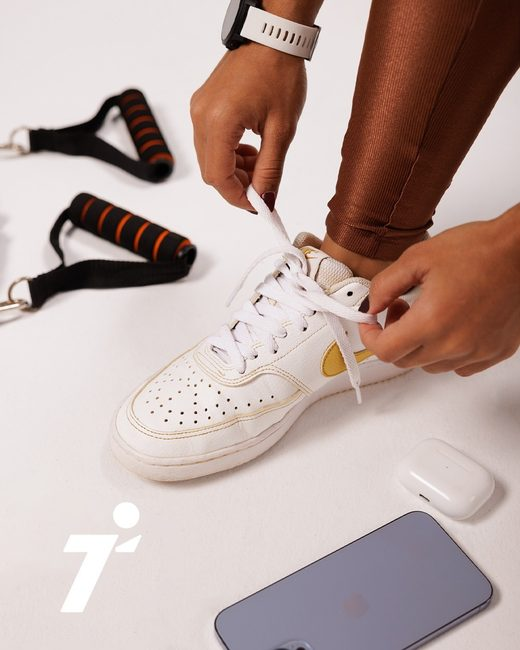
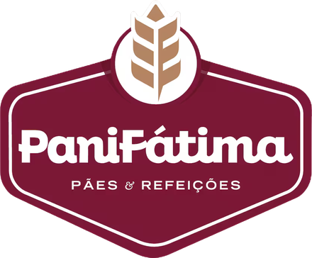
Social Media da empresa PNSF, fui a profissional responsável por planejamento, estratégia, captação, roteirização e edição dos conteúdos, na Agência TANQ Comunicação.
A empresa na época viralizou com alguns conteúdos curtos, engajamento orgânico e campanhas irresistíveis.
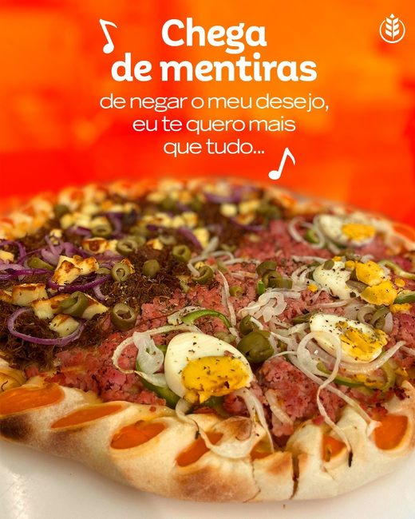
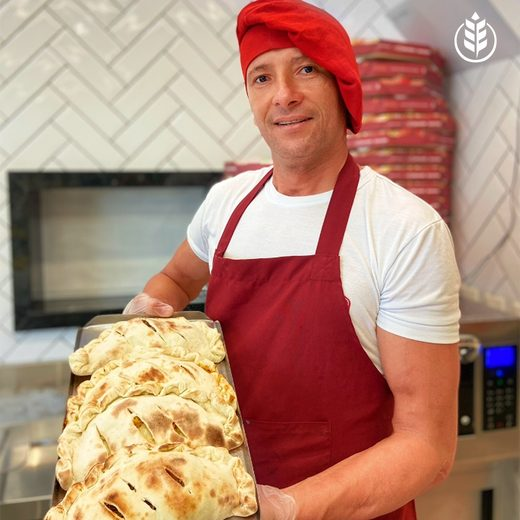
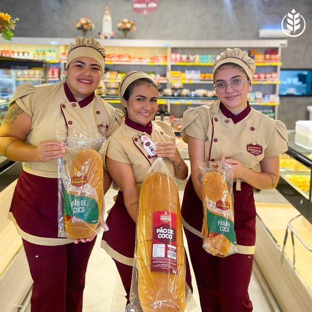
Videomaker Mobile a convite da Jornalista e Influenciadora UGC, Priscila Sampaio, para a Casa Freitas. Sou a profissional freelancer responsável por roteirização, captação e edição profissional dos conteúdos do Meu Clube Casa Freitas, onde divulgamos as promoções do mês vigente.
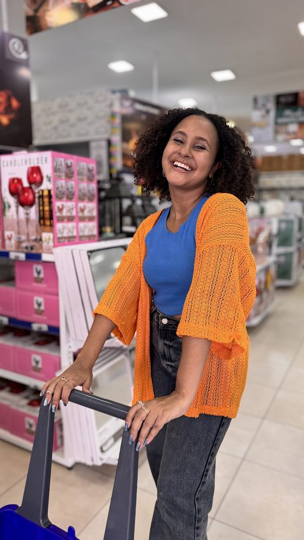
Videomaker Mobile a convite da CEO, Flaviana Dahrouge Marangoni, da empresa Mabrouk Consórcios, para realizações de captações, edições e imagens dos seus conteúdos e presença no audiovisual para redes sociais como Instagram e TikTok.
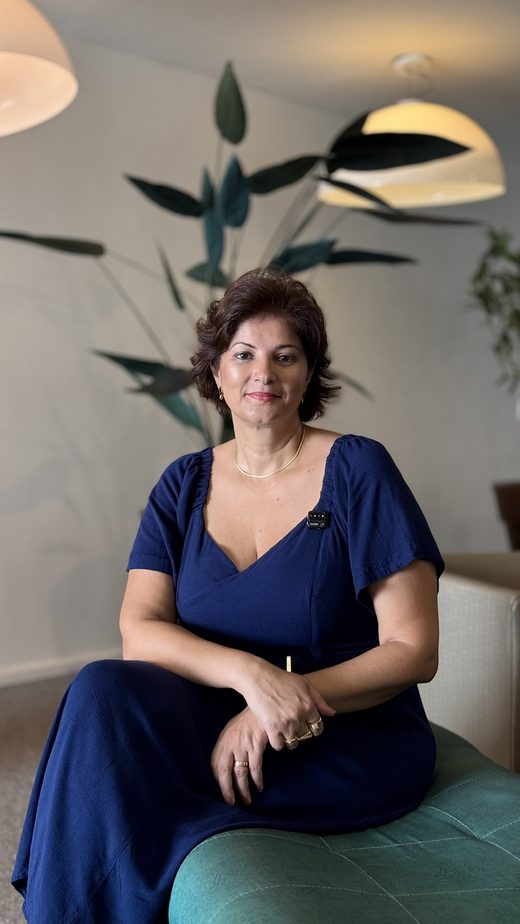
Cobertura em tempo real do DFB Fashion Summit: desfiles, bastidores e credenciados, com conteúdo publicado durante o evento.
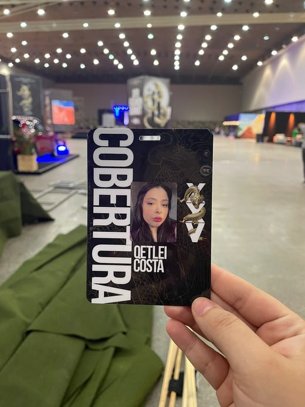
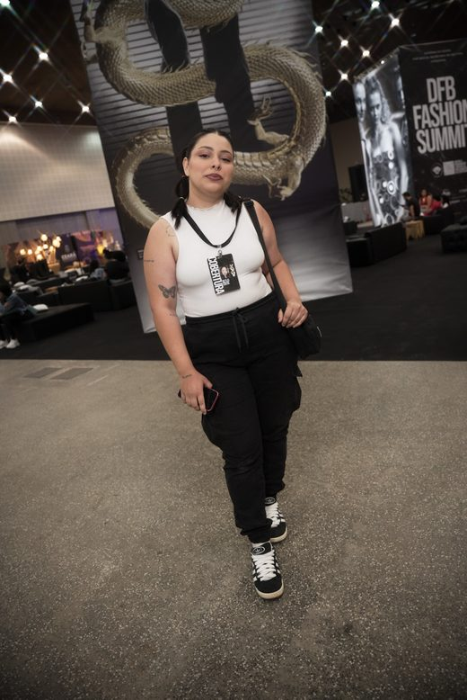
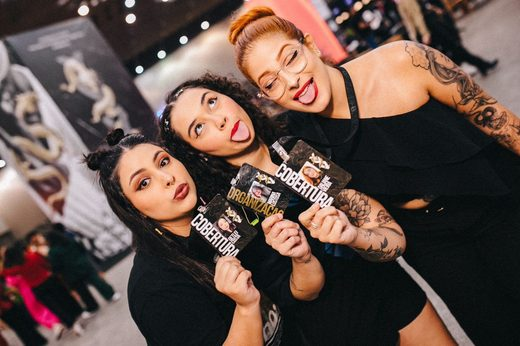
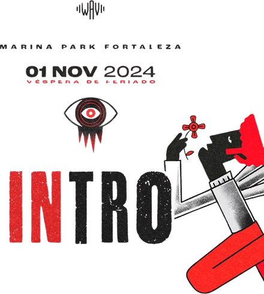
Cobertura real time do festival INTRO: palco, público e ativações de marca entregues na hora para as redes.
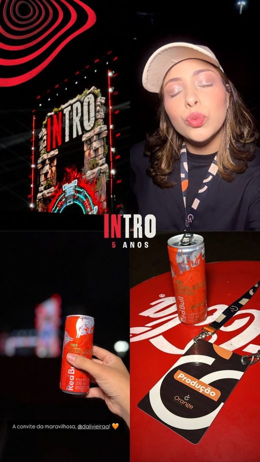
Cobertura em tempo real das festividades da cidade: shows, blocos e bastidores publicados ao longo do evento.
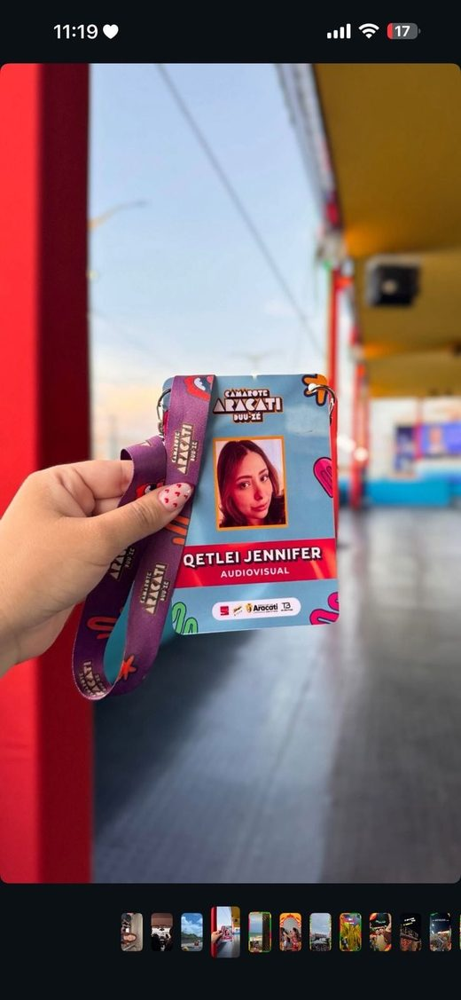
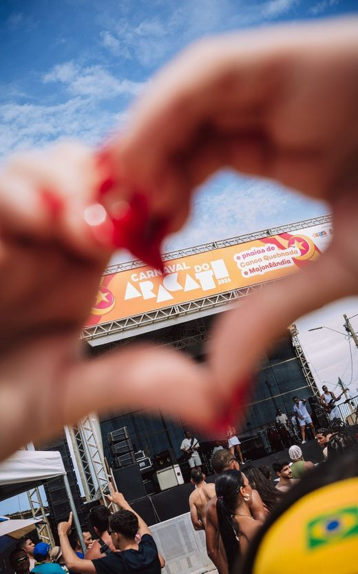
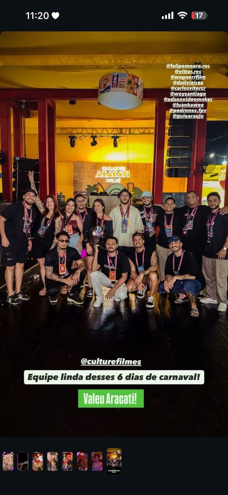
Vamos contar a história da sua marca? Entre em contato e reserve sua data.